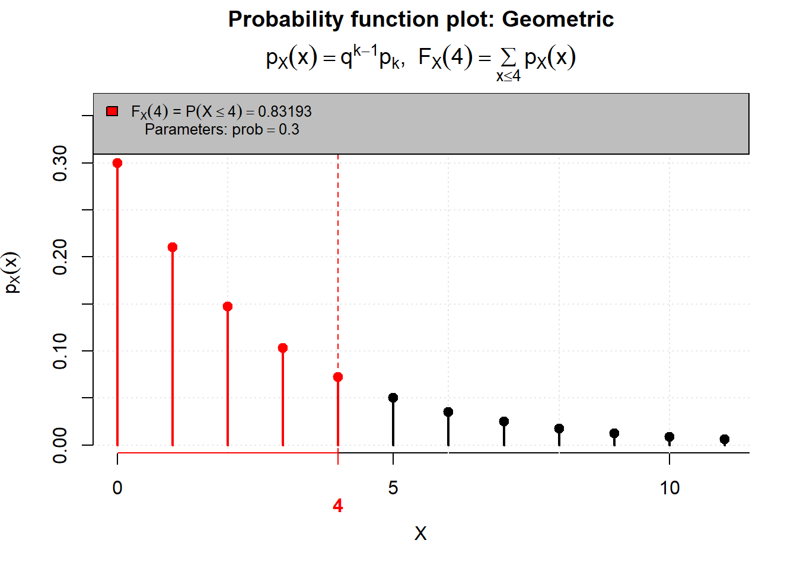
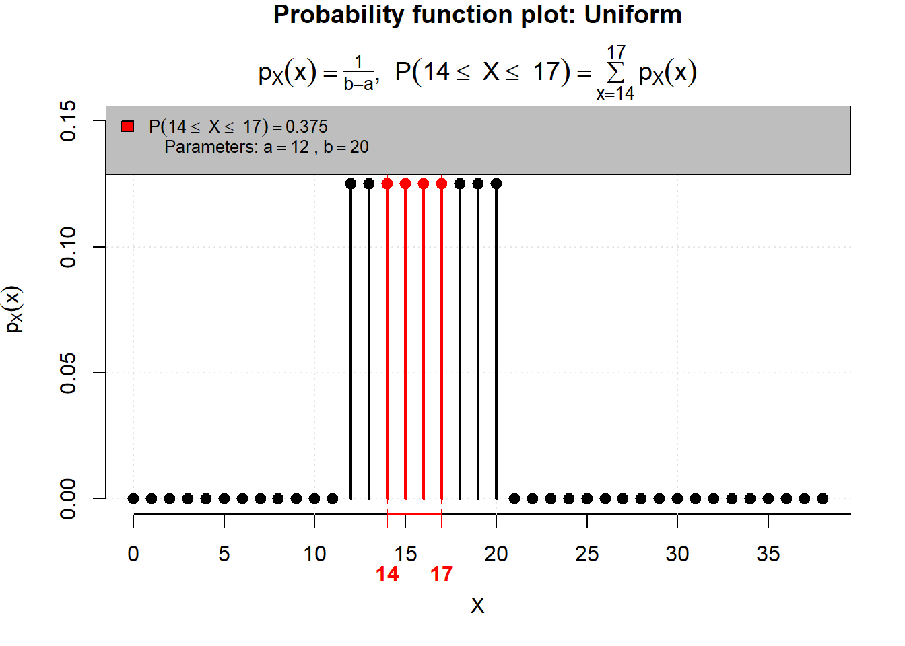
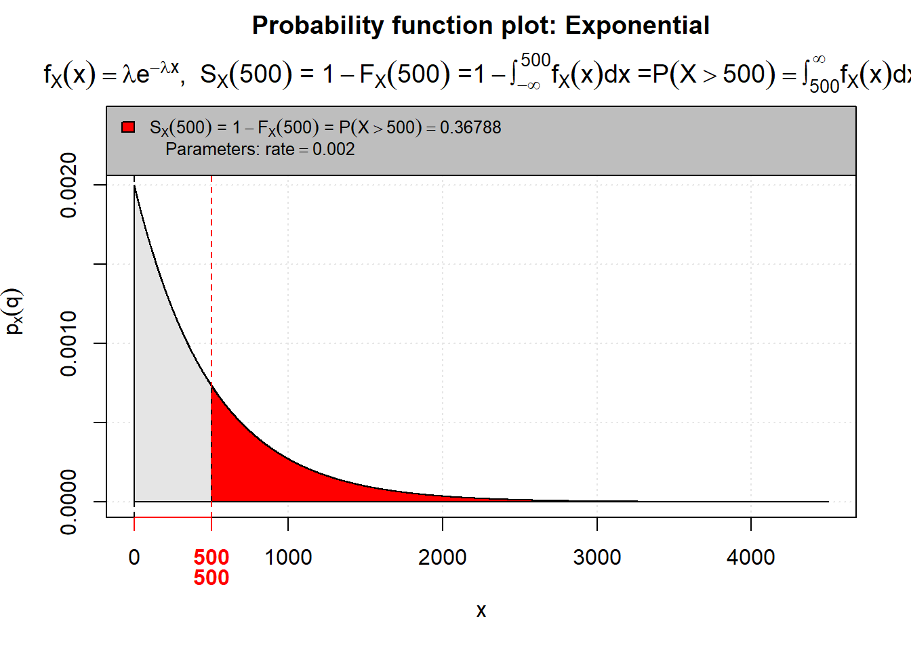

Código
library(leem)
# P(X=1)=P(X≤1)−P(X≤0)
P(q = 1,
dist = "binomial",
size = 12,
prob = 0.05,
) -
P(q = 0,
dist = "binomial",
size = 12,
prob = 0.05
)[1] 0.34128

Estatística e Probabilidade
Prof. Ben Dêivide (DEFIM/CAP/UFSJ)
O estudo das variáveis aleatórias e suas distribuições de probabilidade constitui a base da estatística contemporânea, permitindo o estudo de fenômenos reais e a tomada de decisões fundamentada em dados. Em contextos técnicos, como a engenharia e a computação, essas são ferramentas essenciais para prever falhas em sistemas, analisar tráfego de dados e garantir a qualidade dos equipamentos.
Este relatório tem como objetivo apresentar uma análise teórica e prática das distribuições Binomial, Poisson e Normal, bem como outros modelos complementares Geométrica, Hipergeométrica, Uniforme e Exponencial. O relatório será redigido sobre duas perspectivas: a analítica, através de cálculos matemáticos manuais, e a computacional, utilizando a linguagem R com o auxílio do pacote leem, que contribui para visualização dos dados estatísticos.
Este relatório tem como propósito apresentar os principais modelos de distribuições de probabilidade utilizados na estatística, analisando suas características matemáticas, aplicações práticas na área da Engenharia Mecatrônica e sua implementação utilizando a linguagem computacional R.
O desenvolvimento deste relatório foi realizado por meio dos estudos desenvolvidos em sala de aula, bem como o uso de livros didáticos. Inicialmente, foram estudadas as definições teóricas das principais distribuições discretas e contínuas, analisando suas principais propriedades, diferenças e formas de aplicação.
Posteriormente, foram utilizados exemplos reais aplicados à Engenharia Mecatrônica, nos quais os modelos probabilísticos podem ser empregados. Para complementar a análise teórica, foram realizados cálculos analíticos manuais e implementações computacionais utilizando a linguagem R, juntamente ao pacote leem.
As variáveis podem ser classificadas em dois tipos fundamentais:
Assumem valores contáveis e podem ser observadas em situações como:
Os valores normalmente são:
\[0,1,2,3,4,5…\]
São variáveis que podem assumir valores em um intervalo real, podem ser analisadas em casos como:
Uma altura pode ser:
\[1,54; 1,731; 1,7431 ...\] Ou seja, existem infinitos valores possíveis.
Nesta seção, será abordado algumas distribuições estudadas, apresentando suas definições, bem como suas aplicações práticas em engenharia.
A Distribuição Binomial é do tipo variável aleatória discreta, modela situações em que se é feito vários experimentos independentes e cada experimento possui apenas dois resultados possíveis (Sucesso ou Fracasso).
Fórmula : \[P(X = k) = \binom{n}{k} p^k (1-p)^{n-k}\]
A qual:
Um lote de sensores ultrassônicos ( são usados para medir distância) tem uma taxa de defeito de 5% . Se você comprar 12 sensores para montar um robô, qual a probabilidade de exatamente 1 sensor vir com defeito?
Cálculo Analítico:
Para o cálculo, utilizamos a combinação \(\binom{12}{1} = \frac{12!}{1!(12-1)!} = 12\).\[P(X = 1) = \binom{12}{1} \cdot (0,05)^1 \cdot (0,95)^{12-1}\]\[P(X = 1) = 12 \cdot 0,05 \cdot 0,5688 \approx 0,3413\]
A probabilidade de encontrar exatamente um sensor com defeito é de aproximadamente 34,13%.
Para o cálculo computacional usaremos o pacote leem. Necessitamos conhecer algumas funções que serão usadas no código:
library(leem)
# P(X=1)=P(X≤1)−P(X≤0)
P(q = 1,
dist = "binomial",
size = 12,
prob = 0.05,
) -
P(q = 0,
dist = "binomial",
size = 12,
prob = 0.05
)[1] 0.34128A Distribuição de Poisson é do tipo variável aleatória discreta,modela a quantidade de vezes que um evento ocorre em um intervalo de tempo, local ou região que está sendo analisado, com taxa média λ.
Fórmula: \[P(X = k) = \frac{e^{-\lambda} \cdot \lambda^k}{k!}\]
Onde:
Usada para casos como:
Um servidor recebe em média 3 requisições por minuto. Qual a probabilidade de receber exatamente 5 requisições em um minuto ?
Onde:
Cálculo Analítico: \[P(X = 5) = \frac{e^{-3} \cdot 3^5}{5!}\]\[P(X = 5) \approx \frac{0,0498 \cdot 243}{120} \approx 0,1008\]
A probabilidade de receber 5 requisições em um minuto é de aproximadamente 10,08%.
Funções que usaremos no código:
library(leem)
# P(X=5)=P(X≤5)−P(X≤4)
P(
q = 5,
dist = "poisson",
lambda = 3,
) -
P(
q = 4,
dist = "poisson",
lambda = 3
)[1] 0.10082A distribuição normal é do tipo variável aleatória contínua, usada para modelar fenômenos que tendem a se concentrar em torno de um valor médio, é definida por média μ e por desvio padrão σ.
Fórmula: \[f(x)=\frac{1}{\sigma\sqrt{2\pi}}e^{-\frac{(x-\mu)^2}{2\sigma^2}}\]
Padronização \[Z=\frac{x-\mu}{\sigma}\]
Onde:
Usada bastante em:
Tempo de reposta de um microcontrolador:
Qual a probabilidade de resposta menor que 110ms?
Cálculo Analítico: \[Z=\frac{110-100}{10}\]
\[Z=\frac{10}{10}=1\]
Agora buscamos na tabela da Distribuição Normal Padrão:
\[P(Z<1)\approx0,8413\]
Para obter esse resultado, é necessário realizar a análise da tabela da Distribuição normal.
Como desejamos calcular \(P(Z<1)\), utilizamos a propriedade complementar : \[P(Z<1)=1-P(Z>1)\]

Através da tabela da Distribuição Normal, identificamos que \(P(Z > 1)\approx0,1587\). Assim:
\[ 1-0,1587=0,8413 \]
Portanto, a probabilidade do microcontrolador apresentar um tempo de resposta menor do que 110ms é de aproximadamente 84,13%.
funções que são usadas no código:
library(leem)
P(
q = 110,
dist = "normal",
mean = 100,
sd = 10
)[1] 0.84134A Distribuição de Geométrica é do tipo variável aleatória discreta, tem suas raízes nos trabalhos de Jacob Bernoulli (século XVII) sobre o que hoje chamamos de “Ensaios de Bernoulli” — experimentos que resultam em apenas dois resultados possíveis: “sucesso” ou “fracasso”. Enquanto a Distribuição Binomial (também derivada desses ensaios) foi criada para responder “quantos sucessos ocorrem em \(n\) tentativas?”, os engenheiros e matemáticos precisavam de uma ferramenta para responder a uma pergunta fundamental de confiabilidade e tempo de espera: “Quantas tentativas independentes são necessárias até que o primeiro sucesso ocorra?”. Na engenharia moderna, ela surgiu como a ferramenta definitiva para modelar processos de repetição até o êxito ou falha. Se um robô tenta agarrar uma peça e falha repetidamente devido a variações de iluminação, a distribuição geométrica modela exatamente essa “espera” até o sucesso.
Fórmula: \[P(X = k) = (1 - p)^{k - 1} p\]
Onde:
Por Que é Relevante na Engenharia Mecatrônica?
Sistemas mecatrônicos são compostos por integrações de software, eletrônica e mecânica. A Distribuição Geométrica é crucial para avaliar a resiliência e a confiabilidade dessas integrações:
Redes de Comunicação Industrial (IoT): Em ambientes ruidosos (chão de fábrica com alta interferência eletromagnética), pacotes de dados de sensores frequentemente falham. A distribuição modela quantas vezes o sistema precisa reenviar o pacote até que o CLP (Controlador Lógico Programável) o receba com sucesso.
Controle de Qualidade (Visão Computacional): Um algoritmo de inspeção óptica tenta classificar uma peça com uma taxa de acerto \(p\). O modelo ajuda a definir o limite máximo de retentativas antes de descartar a peça.
Engenharia de Confiabilidade (Fadiga): Usada para modelar a vida útil de componentes discretos, como o número de ciclos que uma válvula solenoide pneumática executa antes de apresentar o primeiro vazamento.
Cenário: Um AGV (Robô Móvel) navega por um armazém logístico. Para se acoplar à sua estação de recarga, ele utiliza um sistema de escaneamento a laser (LiDAR). Devido a poeira e reflexos no ambiente industrial, a probabilidade de o algoritmo do robô reconhecer a estação perfeitamente em um único escaneamento é de 30% (\(p = 0.3\)). Cada escaneamento falho força o robô a se reposicionar e tentar novamente.
Qual a probabilidade de o robô conseguir se acoplar exatamente na 4ª tentativa?
Queremos encontrar \(P(X = 4)\) onde \(p = 0.3\). As 3 primeiras tentativas falham: probabilidade de \(1 - 0.3 = 0.7\). A 4ª tentativa é um sucesso: probabilidade de \(0.3\)
Aplicando a fórmula:\[P(X = 4) = (0.7)^{4 - 1} \cdot 0.3\]\[P(X = 4) = (0.7)^3 \cdot 0.3\]\[P(X = 4) = 0.343 \cdot 0.3\]\[P(X = 4) = 0.1029\] Existe 10.29% de chance de o robô conseguir se alinhar e acoplar exatamente na quarta tentativa.
library(leem)
P(
q = 4,
dist = "geom",
prob = 0.3,
gui = "plot")
[1] 0.83193A Distribuição Hipergeométrica é do tipo variável aleatória discreta, surgiu da necessidade de modelar situações de amostragem sem reposição. Historicamente, sua formalização está ligada ao desenvolvimento da análise combinatória nos séculos XVII e XVIII.
Enquanto a Distribuição Binomial assume que o “universo” é infinito ou que o item retirado retorna ao lote, a Hipergeométrica reconhece a realidade da manufatura: se eu retiro um sensor defeituoso de uma caixa de 10, a probabilidade de encontrar outro defeituoso nos 9 restantes muda drasticamente.
Modelagem Matemática:
Para um engenheiro mecatrônico, a precisão reside nas variáveis. Definimos a probabilidade de obter exatamente \(k\) sucessos em uma amostra de tamanho \(n\), extraída de uma população total \(N\) que contém \(K\) sucessos totais.A FórmulaA função de probabilidade é dada por: \[P(X = k) = \frac{\binom{K}{k} \binom{N - K}{n - k}}{\binom{N}{n}}\]
Variáveis do Sistema:
Por Que é Relevante na Engenharia Mecatrônica?
Na mecatrônica, onde trabalhamos com sistemas embarcados, robótica e linhas de montagem automatizadas, a Distribuição Hipergeométrica é vital por três motivos:
Controle de Qualidade em Lotes Pequenos: Em células de manufatura flexível (Industry 4.0), os lotes costumam ser menores. A aproximação binomial falha aqui por subestimar a variação da probabilidade.
Testes Destrutivos: Se testar um atuador significa levá-lo à falha, ele não volta para o lote. A amostragem é, por definição, sem reposição.
Confiabilidade de Sistemas: Avaliar a probabilidade de falha em sistemas redundantes (ex: um drone com 8 motores onde ele precisa de 6 para voar).
Um lote de \(N = 50\) microcontroladores chega à bancada. Informações históricas sugerem que, em lotes desse fornecedor, geralmente existem \(K = 5\) unidades com clock instável (defeitos). Você seleciona aleatoriamente \(n = 10\) unidades para passar pelo teste funcional automático.
Qual a probabilidade de você encontrar exatamente \(k = 2\) unidades defeituosas na sua amostra?
Cálculo Analítico:
Aplicando os valores na fórmula, Combinações de defeituosos: \(\binom{5}{2} = 10\). Combinações de não-defeituosos: \(\binom{50-5}{10-2} = \binom{45}{8} = 215.553.195\). Combinações totais da amostra: \(\binom{50}{10} = 10.272.278.170\)\[P(X = 2) = \frac{10 \times 215.553.195}{10.272.278.170} \approx 0,2098\]
Através do cálculo analítico foi possível identificar que a probabilidade de se encontrar um k = 2 unidades com defeito é de aproximadamente 20,98%.
P(
q = 2,
dist = "hyper",
m = 5,
n = 45,
k = 10,
)Insert the value of 'm' argument: [1] NAA Distribuição Uniforme é do tipo variável aleatória contínua, surgiu da necessidade de modelar fenômenos de máxima ignorância ou equipotencialidade. No contexto científico, ela foi formalizada para descrever situações onde não temos motivos para acreditar que um valor em um intervalo ocorra com mais frequência que outro.Na engenharia, sua relevância explodiu com a necessidade de quantificar o erro de quantização em conversores analógico-digitais (ADCs) e a tolerância de componentes fabricados em série, onde o controle de qualidade garante que a peça esteja dentro de um limite \([a, b]\), mas não garante uma tendência central (como ocorre na Gaussiana).
Formulação Matemática e Variáveis Diferente de outras distribuições, a Uniforme define que a probabilidade é constante ao longo de um intervalo definido. Função Densidade de Probabilidade (PDF). A probabilidade de uma variável \(X\) assumir um valor entre os limites inferior (\(a\)) e superior (\(b\)) é dada por:
\[f(x) = \begin{cases} \frac{1}{b - a} & \text{para } a \le x \le b \\ 0 & \text{para } x < a \text{ ou } x > b \end{cases}\]
Já a fórmula da probabilidade em um intervalo é:
\[ P(c \le X \le d)=\frac{d-c}{b-a} \]
Onde:
Por Que é Relevante na Engenharia Mecatrônica?
É relevante para compreensão de casos onde se tem um sensor de posição com uma resolução de 0,01 mm, o qual o erro de leitura está distribuído uniformemente entre \(-0,005\) e \(+0,005\);
-Processamento de Sinais: A modelagem do ruído de arredondamento em microcontroladores de 8, 16 ou 32 bits segue este modelo;
-Simulação de Monte Carlo: É a base para gerar números aleatórios que alimentam simulações de falhas e confiabilidade de sistemas robóticos.
Um motor de passo utilizado em uma impressora 3D industrial leva entre 12 e 20 segundos para completar um ciclo de movimentação. Assume-se que qualquer valor dentro desse intervalo possui a mesma probabilidade de ocorrer.
Qual a probabilidade de o motor concluir o movimento entre 14 e 17 segundos?
Resolução Analítica:
\[P(c \le X \le d)=\frac{d-c}{b-a}\]
Colocando os valores do exercício:
\[P(14 \le X \le 17)=\frac{17-14}{20-12}\]
\[P(14 \le X \le 17)=\frac{3}{8}\]
\[P(14 \le X \le 17)=0.375\]
A chance do motor concluir o ciclo entre 14 e 17 segundos é de aproximadamente \[37.5\%\].
library(leem)
P( q = 14 %<=X<=% 17,
dist = "unif",
min = 12,
max = 20,
gui = "plot"
) 
[1] 0.375A distribuição exponencial é do tipo variável aleatória contínua, tem suas raízes no início do século XX, intimamente ligada ao desenvolvimento da Teoria das Filas e dos Processos de Poisson. Ela surgiu da necessidade de modelar matematicamente o tempo de espera entre eventos que ocorrem de forma contínua e independente a uma taxa média constante. Historicamente, o engenheiro e matemático dinamarquês A.K. Erlang foi um dos pioneiros a utilizar esses conceitos para analisar o tráfego de chamadas telefônicas (um sistema clássico de “distribuição” de sinais). Na engenharia moderna, a distribuição exponencial deixou de ser apenas para telecomunicações e se tornou a espinha dorsal da Engenharia de Confiabilidade. Ela surgiu como uma ferramenta vital porque permite aos engenheiros responder a uma pergunta crítica: “Dado que um componente está funcionando agora, qual é a probabilidade de ele falhar nas próximas \(t\) horas?”
Fundamentação Matemática e Variáveis: A distribuição exponencial descreve o tempo entre eventos em um processo de Poisson. Em mecatrônica, o “evento” é tipicamente a falha de um componente. A principal característica que define a distribuição exponencial é a falta de memória (propriedade de Markov). Isso significa que a probabilidade de um componente falhar no próximo instante depende apenas do seu estado atual de funcionamento e da sua taxa de falha, não do tempo em que ele já esteve operando. (Em termos práticos: assume-se que o componente não sofre desgaste gradativo ao longo do tempo, falhando de forma aleatória). Fórmulas EssenciaisAs equações que regem este modelo utilizam a notação matemática padrão para distribuições contínuas:
Fórmula: \[f(t) = \lambda e^{-\lambda t} \quad \text{para } t \ge 0\]
Variáveis e Parâmetros:
Por Que é Relevante na Engenharia Mecatrônica?
Na Engenharia Mecatrônica, que funde mecânica, eletrônica e computação, lidamos com sistemas complexos onde a falha de um subcomponente pode parar uma linha de produção inteira. A distribuição exponencial é relevante por três motivos principais:
Modelagem de Eletrônicos: Componentes de estado sólido (transistores, microcontroladores, sensores ópticos) geralmente não sofrem desgaste mecânico. Suas falhas são aleatórias (devido a picos de tensão, defeitos microscópicos latentes), enquadrando-se perfeitamente no modelo exponencial de taxa de falha constante.
Manutenção Preventiva vs. Corretiva: Como a distribuição “não tem memória”, a manutenção preventiva (trocar uma placa eletrônica antes de quebrar) não faz sentido se ela segue puramente a distribuição exponencial. Isso guia gestores a focarem em redundância de sistemas em vez de substituições programadas para esses itens específicos.
Cálculo de Confiabilidade de Sistemas: Permite calcular a confiabilidade de sistemas em série ou paralelo conectando subsistemas eletrônicos e de automação.
Um sensor industrial utilizado em um braço robótico possui taxa média de falha constante de λ=0.002 falhas por hora.
Qual a probabilidade de o sensor funcionar por mais de 500 horas sem falhar?
Cálculo Analítico:
\[P(X>x)=e^{-\lambda x}\]
Substituindo os valores:
\[P(X>500)=e^{-0.002\cdot500}\]
\[P(X>500)=e^{-1}\]
\[P(X>500)\approx0.3679\]
A probabilidade do sensor funcionar sem falhar por mais de 500 horas é de \[36.79\%\].
library(leem)
P(
q = 500,
dist = "exp",
rate = 0.002,
gui = "plot",
lower.tail = FALSE
)
[1] 0.36788O relatório explora distribuições discretas e contínuas, demonstrando suas características matemáticas e aplicações práticas. A Distribuição Binomial mostrou-se essencial para cenários com um número fixo de tentativas e dois resultados possíveis, como no controle de qualidade de sensores. A Distribuição de Poisson permitiu modelar a ocorrência de eventos em um intervalo contínuo, exemplificado por requisições em servidores. A Distribuição Normal, com sua ubiquidade em fenômenos naturais e industriais, foi aplicada na análise de tempos de resposta de microcontroladores, destacando a importância da padronização para a interpretação de dados.
Além dessas, foram abordadas distribuições complementares de grande relevância. A Distribuição Geométrica ofereceu uma ferramenta para entender o número de tentativas até o primeiro sucesso, vital para a confiabilidade de robôs móveis (AGVs) . A Distribuição Hipergeométrica evidenciou sua importância em amostragens sem reposição, crucial para inspeções de microcontroladores em lotes pequenos . A Distribuição Uniforme mostrou-se útil para modelar situações de equiprobabilidade em um intervalo, como erros de posicionamento em atuadores lineares. Por fim, a Distribuição Exponencial foi apresentada como um modelo chave para a engenharia de confiabilidade, especialmente na análise do tempo de vida de componentes eletrônicos, como relés em CLPs. A metodologia empregada, que combinou cálculos analíticos manuais com a implementação computacional na linguagem R, utilizando o pacote leem, reforça a importância de uma abordagem dual. Enquanto os cálculos manuais solidificam a compreensão teórica das fórmulas e seus princípios, a implementação em R oferece uma ferramenta poderosa para a análise de dados complexos, simulações e visualização, permitindo que engenheiros mecatrônicos apliquem esses conceitos de forma eficiente em cenários do mundo real. A integração dessas ferramentas permite não apenas a resolução de problemas, mas também a otimização de processos, a avaliação de riscos e a tomada de decisões baseadas em evidências.
Portanto, o conhecimento das distribuições de probabilidade é indispensável para o Engenheiro Mecatrônico, capacitando-o a projetar, analisar e manter sistemas complexos com maior precisão,desempenho e confiabilidade, desde o controle de qualidade de componentes até a previsão de falhas em sistemas autônomos e a otimização de processos industriais.